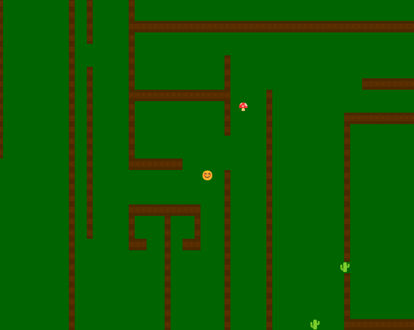

· Portfólio pessoal ·
AUGUSTO
GOMES
Aluno de Ciência da computação no Insper e entusiasta de tecnologia.
· Interesses atuais ·
O QUE ESTOU
CONSTRUINDO
Estou desenvolvendo meus conhecimentos em programação por meio de projetos acadêmicos e pessoais, com interesse especial em desenvolvimento de software e cibersegurança.
Conheça minha trajetória· Projeto em destaque ·
TRABALHO
SELECIONADO
Um dos projetos desenvolvidos durante minha formação em Ciência da Computação.

Jogo no terminal
Jogo roguelike de terminal desenvolvido em Python como projeto acadêmico do primeiro semestre.
Python · Curses · Terminal
· Contato ·